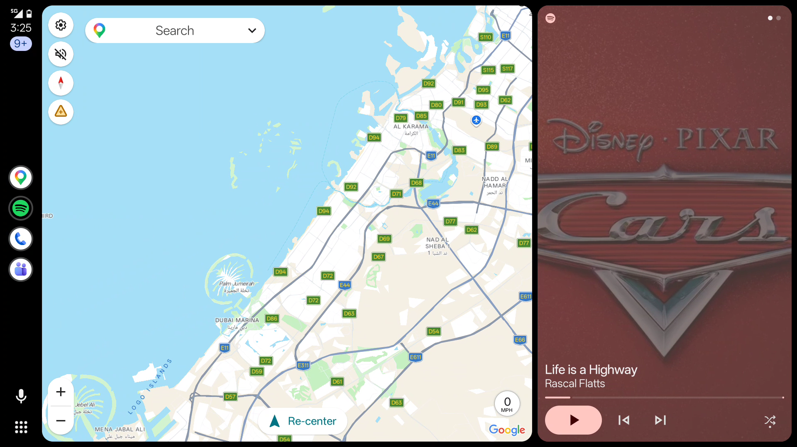
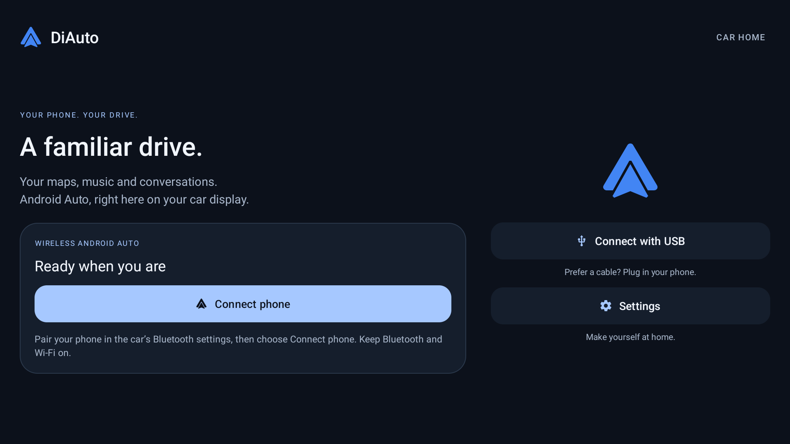
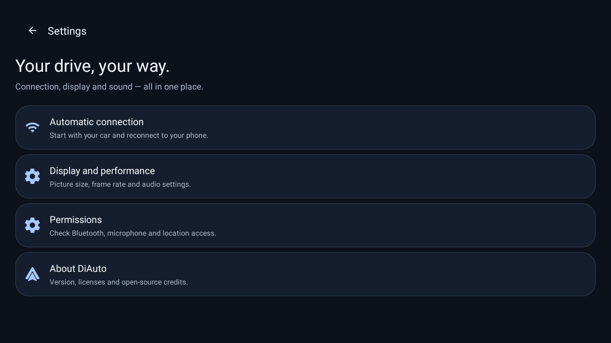

Android Auto.
На экране вашего BYD.
Карты, музыка и общение на экране автомобиля. DiAuto добавляет беспроводной Android Auto на совместимые головные устройства BYD DiLink — с простым интерфейсом и более плавной прокруткой.
Без дополнительного приложения на телефоне. Без адаптера и другого оборудования. Без root.
Установите DiAuto в автомобиле. Совместимый Android-телефон использует встроенную поддержку Android Auto. Android-телефон всё равно необходим; это не Apple CarPlay.
Создано для автомобиля
{kind=link}

{kind=link}

{kind=link}

Установка в автомобиле
- Скачайте APK и установите на головное устройство разрешённым в его системе способом или по инструкции ADB ниже. Настраивайте на стоянке.
- Откройте DiAuto и завершите настройку. Предоставьте разрешения Bluetooth, Wi-Fi/геолокации, микрофона и другие разрешения для нужных функций.
- Выполните сопряжение Android-телефона в настройках Bluetooth автомобиля. Включите Bluetooth и Wi-Fi, затем нажмите Connect phone в DiAuto.
- Предпочитаете кабель? Подключите телефон кабелем USB с передачей данных и выберите Connect with USB.
DiAuto 0.3.2 автоматически определяет адрес Wi-Fi Direct на поддерживаемых прошивках DiLink. Оставьте Static BSSID в режиме Auto; для этого не нужна настройка ADB. На некоторых прошивках и телефонах проблемы подключения могут сохраняться.
Установка и помощь с сопряжением ↗Что нового
- Беспроводной Android Auto и подключение по USB.
- Удобные для автомобиля главный экран, настройки и диалоги.
- Режим музыки через Bluetooth автомобиля без конкуренции за аудиофокус мультимедиа.
- Улучшенный выбор канала Wi-Fi и планирование кадров для уменьшения рывков.
Совместимость
Проверено на BYD DiLink 5.1 с Android 13 по беспроводному соединению и USB. Другие устройства и версии прошивки пока не проверены. Возможности и производительность зависят от телефона и автомобиля; постоянные 60 кадров/с не гарантируются.
Следите за обновлениями
Новые версии и новости проекта — в Telegram-канале.
Обновления и подпись
Первый публичный релиз подписан отдельным ключом. Он будет использоваться для следующих публичных версий. У закрытых тестовых и исходных сборок подпись может отличаться: экспортируйте настройки перед удалением несовместимой сборки. Удаление стирает локальные данные.